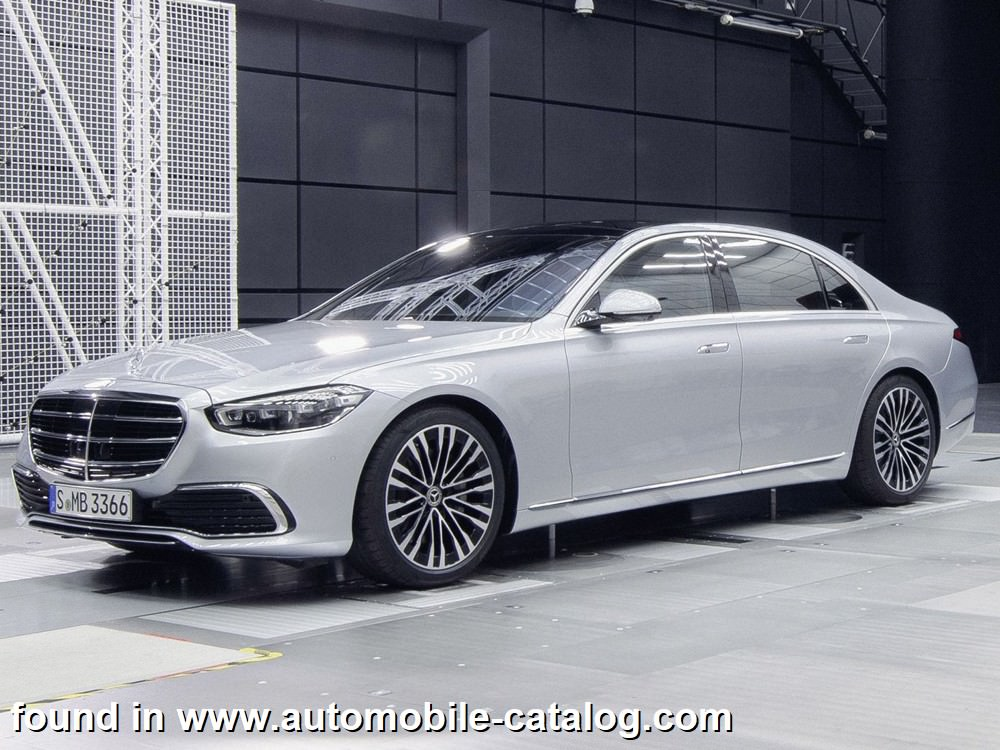
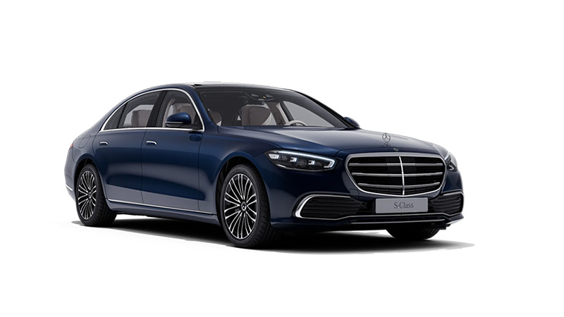
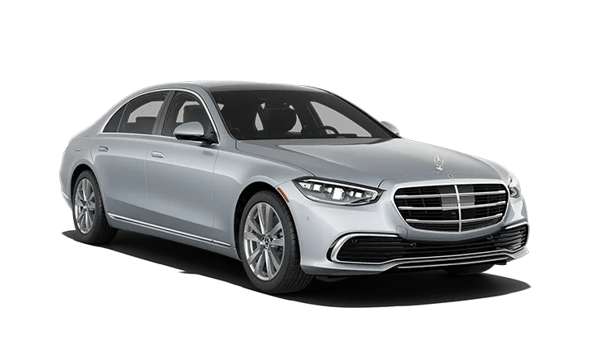
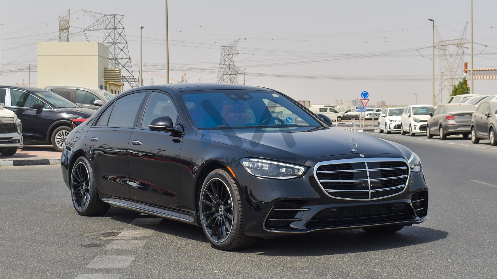
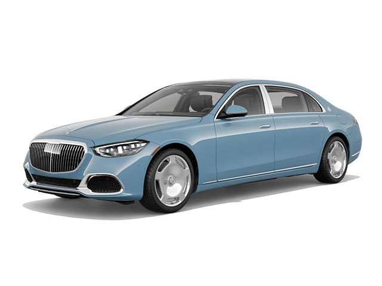
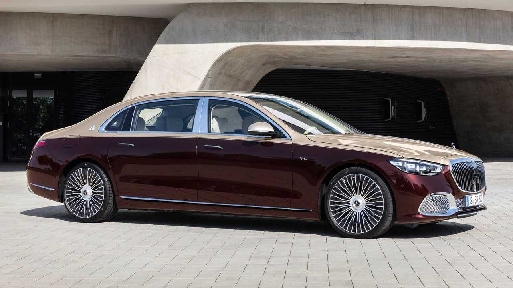
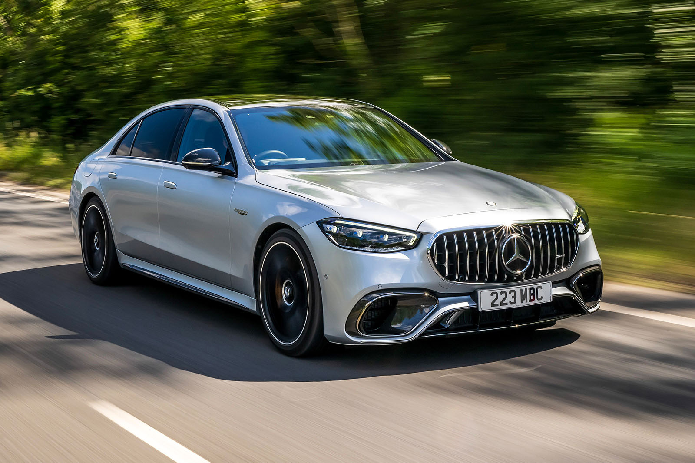

MERCEDES-BENZ
Mercedes-Benz S-Class
جميع نسخ مرسيدس S-Class مع المواصفات الرسمية مرتبة في صفحة واحدة، لتسهيل المقارنة بين جميع الإصدارات.
جميع نسخ مرسيدس S-Class مع المواصفات الرسمية مرتبة في صفحة واحدة، لتسهيل المقارنة بين جميع الإصدارات.

| المحرك | 3.0 لتر ديزل تيربو (6 أسطوانات مستقيمة) |
| عدد الأسطوانات | 6 |
| القوة | 313 حصان |
| عزم الدوران | 700 نيوتن متر |
| ناقل الحركة | 9G-TRONIC أوتوماتيكي |
| نظام الدفع | 4MATIC (دفع رباعي) |
| التسارع (0-100) | 5.6 ثانية |
| السرعة القصوى | 250 كم/س |
| استهلاك الوقود | حوالي 6.7 لتر/100 كم |
| عدد المقاعد | 5 |
| نوع الوقود | ديزل |

| المحرك | 3.0 لتر بنزين تيربو + نظام هجين خفيف (Mild Hybrid) |
| عدد الأسطوانات | 6 أسطوانات مستقيمة |
| القوة | 375 حصان |
| عزم الدوران | 500 نيوتن متر |
| ناقل الحركة | 9G-TRONIC أوتوماتيكي |
| نظام الدفع | 4MATIC (دفع رباعي) |
| التسارع (0-100) | 5.3 ثانية |
| السرعة القصوى | 250 كم/س |
| عدد المقاعد | 5 |
| نوع الوقود | بنزين |

| المحرك | 3.0 لتر بنزين تيربو + نظام هجين خفيف (ISG) |
| عدد الأسطوانات | 6 أسطوانات مستقيمة |
| القوة | 442 حصان |
| عزم الدوران | 560 نيوتن متر |
| ناقل الحركة | 9G-TRONIC أوتوماتيكي |
| نظام الدفع | 4MATIC (دفع رباعي) |
| التسارع (0-100) | 4.9 ثانية |
| السرعة القصوى | 250 كم/س |
| عدد المقاعد | 5 |
| نوع الوقود | بنزين |

| المحرك | 4.0 لتر V8 Biturbo + نظام هجين خفيف (ISG) |
| عدد الأسطوانات | 8 (V8) |
| القوة | 496 حصان |
| عزم الدوران | 700 نيوتن متر |
| ناقل الحركة | 9G-TRONIC أوتوماتيكي |
| نظام الدفع | 4MATIC (دفع رباعي) |
| التسارع (0-100) | 4.4 ثانية |
| السرعة القصوى | 250 كم/س |
| عدد المقاعد | 5 |
| نوع الوقود | بنزين |

| المحرك | 4.0 لتر V8 Biturbo + نظام هجين خفيف (ISG) |
| عدد الأسطوانات | 8 (V8) |
| القوة | 496 حصان |
| عزم الدوران | 700 نيوتن متر |
| ناقل الحركة | 9G-TRONIC أوتوماتيكي |
| نظام الدفع | 4MATIC (دفع رباعي) |
| التسارع (0-100) | 4.8 ثانية |
| السرعة القصوى | 250 كم/س |
| عدد المقاعد | 4 أو 5 (حسب التجهيز) |
| نوع الوقود | بنزين |

| المحرك | 6.0 لتر V12 Biturbo |
| عدد الأسطوانات | 12 (V12) |
| القوة | 612 حصان |
| عزم الدوران | 900 نيوتن متر |
| ناقل الحركة | 9G-TRONIC أوتوماتيكي |
| نظام الدفع | 4MATIC (دفع رباعي) |
| التسارع (0-100) | 4.5 ثانية |
| السرعة القصوى | 250 كم/س |
| عدد المقاعد | 4 أو 5 (حسب التجهيز) |
| نوع الوقود | بنزين |

| المحرك | 4.0 لتر V8 Biturbo + محرك كهربائي (Plug-in Hybrid) |
| عدد الأسطوانات | 8 (V8) |
| القوة الإجمالية | 802 حصان |
| عزم الدوران | 1430 نيوتن متر |
| ناقل الحركة | AMG SPEEDSHIFT MCT 9G |
| نظام الدفع | AMG Performance 4MATIC+ |
| التسارع (0-100) | 3.3 ثانية |
| السرعة القصوى | 290 كم/س |
| عدد المقاعد | 5 |
| نوع الوقود | بنزين + كهرباء |